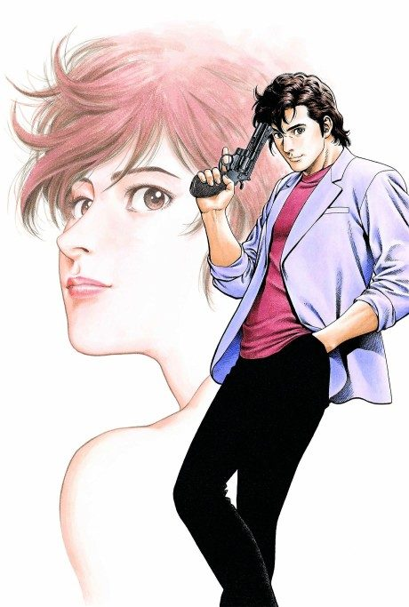
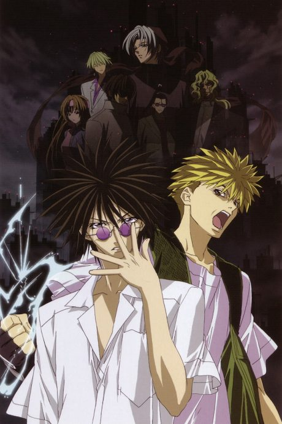

Sakamoto Days
SAKAMOTO DAYS
Sakamoto, once the world's greatest hitman, retired to run a convenience store, but assassins keep coming after him.
After the anime, read the manga from Chapter 74.
7.6AniList score
—Animeter, no votes yet
22episodes, 2 seasons
Rate it or report where you stopped
Is it worth pushing through?
Built from what visitors report across all 2 seasons (22 episodes).
Loading reports…Checking what other people said about this one.
Sign in above with your email to add your report.
More like Sakamoto Days
 Original8.0
Original8.0
 Unclear7.6
Unclear7.6
 Manga Ch. 1357.8
Manga Ch. 1357.8
 Manga Ch. 11518.7
Manga Ch. 11518.7

Manga Ch. 1697.6 Done8.5
Done8.5
 Manga Mission 888.3
Manga Mission 888.3
 Original8.4
Original8.4

Unclear7.1
Original7.7
Darker than Black Manga Vol. 128.0
Manga Vol. 128.0
 Done7.9
Done7.9